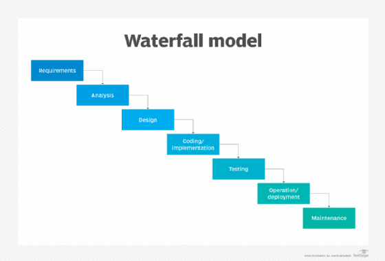

Waterfall ehk kosemudel
Waterfall on üks esimesi tarkvara arendus mudeleid tavaliste
tootmisprotsesside eeskujul, kus iga etapp eelneb järgmisele. Tagasipöördumine eelmisesse
on keeruline. Eelnevas etapis vea avastamine, tähendab seda, et vea juurde saab tagasi
pöörduda alles siis, kui tarkvara on kasutusse läinud.
-
Etapp - Nõuete määrtlemine:
Selles etapis dokumenteeritakse arendatava toote/tarkvara/süsteemi nõuded, käitumine,
sihyriistvara jms. mis on arendatava tarkvara taatlusliku funksioneerimine tarbeks vajalikud
Vahest jaotatakse see etapp ka omakorda kaheks - Süsteemianalüüs ja Nõuete analüüs.
-
Etapp - Süsteemi ja tarkvara kavandamine:
Teises etapis kavandatakse arendusel olev süsteem ja tarkvara keskenduses nende põhilistele
omadustele. Põhiomaduseks võivad olla: Andmestruktuurid, tarkvara arhitektuur, liidesed,
liideste omadused ning protseduurilised ja algoritmilised detailid. kavandamise tulemused
dokumenteeritakse mille abil hinnatakse teostuse käigus projekti kvaliteet
-
Etapp - Teostus ning moodulite testimine:
Eelnevalt dokumenteeritud kavandi järgi toimub kolmandas etapis tarkvara/süsteemi arendus.
Arendustöö käigus arendatakse programm moodulhaaval või moodulite kogumina. Peale
programmeerimist teostatakse moodulite ja kogumite teistimised. Olenevalt eelnevalt
dokumenteeritud kavandi detailsusest tuleneb sellest etapis projekti arenduslihtsus.
Mida rohkem detailse on kavandatud, seda lihtsam on arendustöö
-
Etapp - Integratioon ja süsteemi testimine:
Toimub kogu takvarasüsteemi testimine. Peale tesitmist tarnitakse toode kliendile või
kasutajate sihtrühmale. Tesitakse sellest vaatepunktist kas süsteem teeb seda mis
eelnevalt dokumenteeritud ning testiakse ka seda et süsteemis esinevad detailid on
loogilised.
-
Etapp - kasutamine ja hooldus
Kõige pikem tarkvara elutsüklis olev etapp. Siin toimub vigade parandus, funktsionaalsuse
muutmine, (kas siis kliendi, turu, keskkonna, või sihtrühma sisendi/vajadusena). Arendustöö
teostamiseks korratakse kõiki eelmisi etappe, kuid siis ainult süsteemi muutmise eesmärgil.
mitte enam nullist millegi uue arendamise jaoks.
Iga etapi etapi tulemusena tekib dokument (kas siis üks või mitu) mis etapis saavutatud tulemit.
Kõik dokumendid kinnitatakse. Järgmine etapp ei tohi olla samaaegselt töös kui eelmine pole lõpetatud.
Kuigi mingi ülekate siis on, ning infot on võimalik edastada ühtest etapist edasi teise.

| Head |
Vead |
| kindlad nõuded |
Mitte paindlik |
| lihtne hallata |
Mis sa tahad alguses, on mis sa lõpus saad |